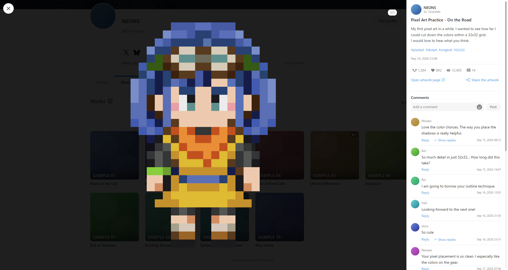
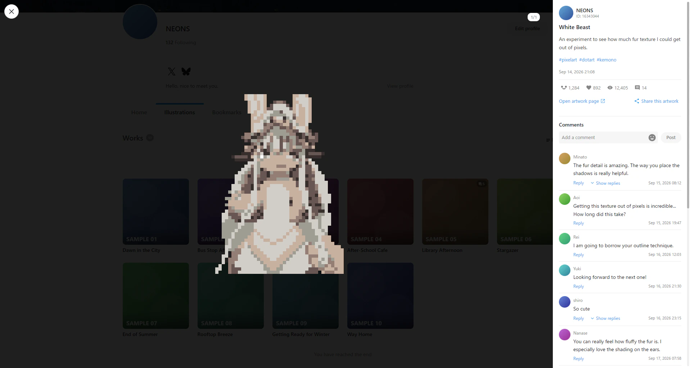
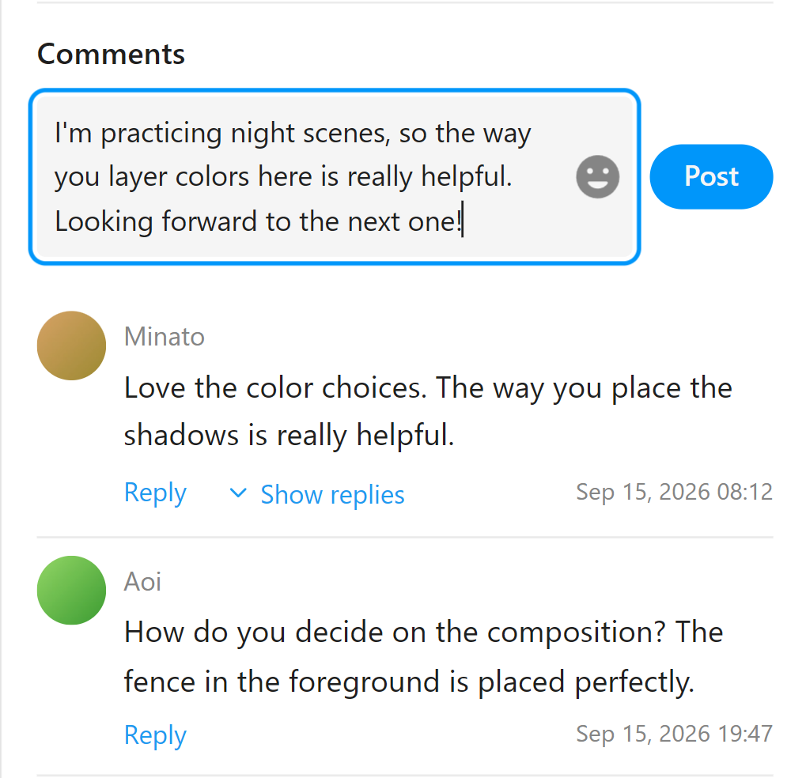
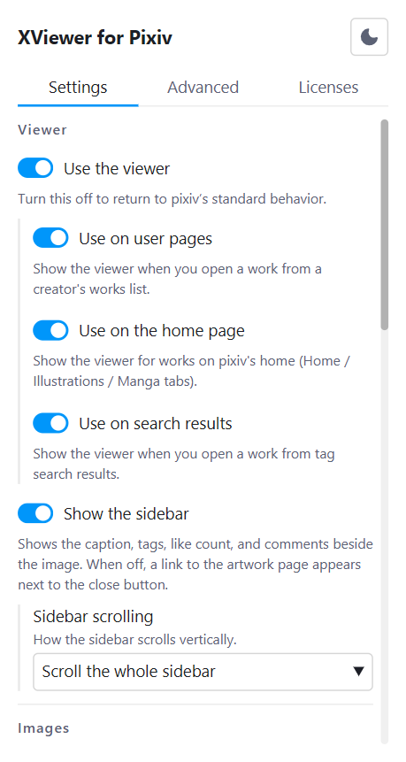
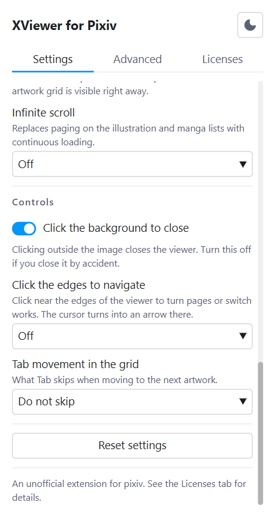

支持 Chrome / Brave / Edge / Firefox
像浏览 X 一样，浏览 pixiv。
在用户页面点击作品后，无需跳转页面，就会在当前页面打开弹窗。 多张图片的切换、动图的播放、作品说明和评论的阅读，乃至点赞、收藏、关注和发表评论， 全都能在弹窗中完成。 关闭后，即可回到原来网格中的原有滚动位置。

不离开列表，直接看下一个作品
每打开一个作品就要跳转页面，每次返回都会找不到原来的滚动位置。本扩展程序就是为了消除这种来回往返。
在弹窗中打开
接管网格中的点击，不跳转页面直接显示。URL 会替换为作品页面的地址，因此也可以刷新和分享。
切换多张图片
用左右方向键或屏幕边缘的箭头翻页。会预加载前后的图片，切换时无需等待。
一个接一个看作品
用上下方向键移到网格中的上一个或下一个作品。到达末尾时会自动加载下一页的内容。在插画和漫画标签页中，只会依次浏览该类别的作品。
播放动图
解压 zip 并组合帧，直接在当前位置播放。也支持暂停。
查看原图
点击图片后，以原始尺寸铺满整个屏幕打开。打开时也能翻页，可以一边确认细节一边往下看。
阅读和发表评论
以图片形式显示贴图和表情，也支持展开回复和加载更多。发表评论、回复以及删除自己的评论，都可以在弹窗打开的状态下完成。
点赞和收藏
关注，以及分享到 X / Facebook / Pawoo 和复制链接，也都可以在弹窗中操作。按住 Shift 点击收藏即可非公开收藏。在自己的作品中不显示这些按钮。
夜间与日间
查看器的配色跟随 pixiv 网站的设置，不需要另外再设置一遍。设置页面的配色可以通过右上角的图标切换。
作品说明和评论，都在图片旁边
侧边栏中排列着作品说明、标签、投稿时间、点赞数、收藏数、浏览量，以及作者的头像和关注按钮。 评论中的贴图和表情会直接以图片显示，回复也能当场展开。
- 可以选择整个侧边栏一起滚动，还是只滚动评论
- 即使加载失败，也可以通过重试继续阅读
- 在其他标签页中点过的赞，不会重复计算
- 也可以隐藏侧边栏，只看图片

无需关闭，直接回复
评论和回复都可以在弹窗打开的状态下发表。输入框会随输入的行数伸展， 表情和贴图可以从面板中选择。Ctrl + Enter 发送，Enter 换行。
- 自己的评论经过两步确认后可以删除
- 有尚未发送的内容时，按 Esc 不会关闭弹窗
- 发表的评论与在 pixiv 网站上发表的评论完全相同

让列表不再中断
可以将插画和漫画列表的分页改为向下连续加载。 URL 中的页码会跟随屏幕上显示的页面，刷新后也能回到大致相同的位置。
- 可选择“滚动到底部时加载”或“始终提前加载下一页”
- 可以隐藏个人资料中的精选栏，让作品列表一眼可见
可以细致地设置扩展程序
从工具栏的图标打开。分为查看器、图片、用户页面、操作 4 类，从显示效果到操作习惯，都能按自己的喜好调整。
- 可以根据网络状况和喜好，选择图片分辨率和预加载的张数
- 侧边栏的显示方式、滚动方式，乃至点击背景是否关闭都可以更改
- 关闭查看器本身，即可恢复 pixiv 的默认行为


可以设置的内容
所有设置都可以在工具栏的弹窗中更改。设置保存在浏览器的同步存储中，不会发送到外部。
| 分类 | 项目 | 默认值 | 效果 |
|---|---|---|---|
| 查看器 | 使用查看器 | 开 | 关闭后将恢复 pixiv 的默认行为 |
| 查看器 | 显示侧边栏 | 开 | 在图片旁显示作品说明、标签、点赞数和评论。关闭后会在关闭按钮旁显示作品页面链接。屏幕较窄时，可用右上角的按钮展开 |
| 查看器 | 侧边栏的滚动方式 | 整个侧边栏 | 将作品说明到评论连成一体滚动，还是固定作品说明、只滚动评论 |
| 图片 | 图片分辨率 | 标准 | 选择原图会更清晰，但加载较慢 |
| 图片 | 预加载 | 前后各 1 张 | 可以选择提前加载的图片张数 |
| 图片 | 预加载前后作品 | 关 | 显示完成后，会预先加载 1 件可能移动到的作品 |
| 图片 | 点击查看原图 | 关 | 点击图片后，以原始尺寸铺满整个屏幕打开 |
| 用户页面 | 隐藏精选栏 | 关 | 隐藏个人资料主页中显示的精选栏 |
| 用户页面 | 无限滚动 | 不使用 | 可选择“滚动到底部时加载”或“始终提前加载下一页” |
| 操作 | 点击背景关闭 | 开 | 点击图片外侧时是否关闭 |
| 操作 | 网格中的 Tab 键导航 | 不跳过 | 在网格中按 Tab 时，是否将收藏和标题从焦点顺序中移除 |
键盘操作
Esc 会按表情面板、查看原图和分享菜单、弹窗的顺序关闭。有尚未发送的评论时不会关闭弹窗。
输入评论时，Enter 为换行，← → ↑ ↓ 用于移动光标。（不会切换作品）
运行环境
可在支持 Manifest V3 的 Chromium 内核浏览器和 Firefox 中运行。
支持的浏览器
Chrome、Brave、Edge 等 Chromium 内核浏览器。需要 Chrome 120 及以上版本。Edge 也可以从 Edge 加载项安装。Firefox（Firefox 140 及以上的桌面版）可以从 Firefox 附加组件安装。不支持 Safari。
适用页面
https://www.pixiv.net/ 的用户页面。在其他网站上不会运行。
许可证
源代码公开在 GitHub 上。免责声明和随附的第三方资源的说明，位于设置页面的“许可证”标签页中。
支持的语言
扩展程序的显示语言会跟随 pixiv 的显示语言切换。下表列出了 pixiv 可选的 7 种显示语言。当 pixiv 以“视需求而定”的语言显示时，扩展程序将以英语显示。
| 语言 | 支持情况 |
|---|---|
| 日语 | 支持 |
| 英语 | 支持 |
| 韩语 | 支持 |
| 中文（简体） | 支持 |
| 中文（繁体） | 支持 |
| 泰语 | 视需求而定 |
| 马来语 | 视需求而定 |
数据不会离开 pixiv
本扩展程序没有作者的服务器，只与你正在浏览的 pixiv 及其图片 CDN 通信。
不收集的内容
浏览记录、作品 ID、用户 ID、Cookie、认证信息、个人信息。以上内容一概不获取、不保存、不发送。你写的评论也只会直接提交给 pixiv，不会留在扩展程序中。
保存的内容
你选择的 12 项设置，以及最后看到的 pixiv 显示语言。两者都只保留在浏览器中，不会发送到外部服务器。
请求的权限
只有 storage 和 https://www.pixiv.net/* 这 2 项。不请求访问其他网站的权限。
这是非官方的扩展程序。
它是利用 pixiv 平台开发的，并非由 pixiv Inc. 制作或发布的应用程序。 与该公司没有任何关系，也未获得其合作、支持或推荐。
- 使用风险自负。对于因使用本扩展程序而造成的损失，作者及 pixiv Inc. 概不负责
- R-18 作品的显示遵循 pixiv 的设置。本扩展程序不会绕过年龄限制
- 赞无法取消。这是 pixiv 的机制，即使误点也无法撤回
- 发表和删除评论与在 pixiv 网站上操作相同。每次点击都会直接发送到 pixiv。删除后无法恢复，因此设有两步确认
- 没有收集作品的功能。既没有下载，也没有批量操作的自动化，只获取当前打开的作品及其前后的几张图片
- 可能会因 pixiv 的改版而无法运行